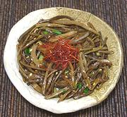

|
Sweet Potato Stem NamulKorea - Mallin-goguma-julgi-namul | ||||
| Serves: Effort: Sched: DoAhead: |
4 ban ** 1 day Yes |
Sweet Potato Stems Namul (seasoned vegetable) is a popular Banchan (small side dish) in Korea. It can be made from fresh or dried stems. This one, from dried stems, has a pleasant seasoned vegetable taste and a bit of crunchiness. This recipe makes about 7 ounces. | |||
|
9 3 3 1 2 1/2 1/2 1/2 |
oz cl T T t T T |
Sweet Potato Stem (1) Garlic Scallions Oil Soy Sauce Chili Flake (2) Sesame Oil, dark Sesame, toasted (3) |
Make - (25 min + 12 hrs for dried stems)
|